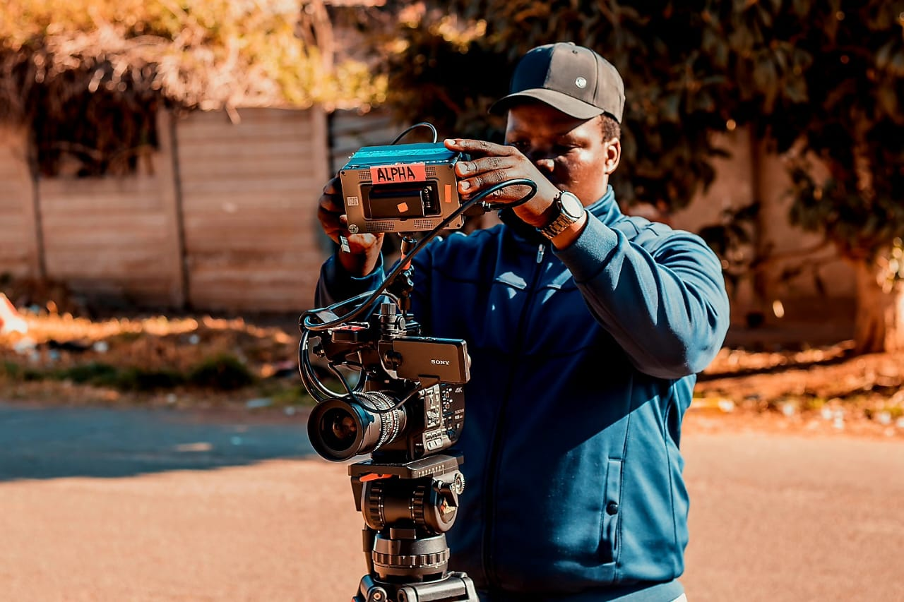

Producer • Cinematographer • Editor
African storytelling with emotional precision and cinematic depth.

Anga Siyoyo is a South African filmmaker focused on emotional realism, identity, and human resilience. His work blends documentary and cinematic storytelling into deeply human narratives.
EDUCATION
Anga Siyoyo’s educational journey has laid a strong foundation in storytelling,
visual culture, and human psychology. His studies in Film and Television are
grounded in both theory and hands-on production, while his academic background
in sciences and languages developed a disciplined and analytical approach to
creative work.
This unique blend equips him to tell layered, emotionally intelligent stories
grounded in real-world dynamics.
2022–2026 • University of Johannesburg, Johannesburg
Concentration:
Communication and Media Studies
Psychology
THE VISION
From the heart of Johannesburg’s creative scene, Anga Siyoyo blends
storytelling with visual power—shaping music videos, short films,
and documentaries that speak to African identity, youth culture,
and psychological truth.
Whether through lens or timeline, Anga’s craft explores the layers
beneath human expression.
BIO
Currently completing a BA in Film and Television at the
University of Johannesburg, I have spent the past three years
honing my skills in producing, cinematography, lighting
(gaffer), and post-production editing.
I’ve worked on music videos, short films, and independent
documentaries. In 2024, I founded CSA Productions,
an independent company focused on bold, creative storytelling.
MY APPROACH
My approach is rooted in storytelling that is emotionally
grounded and visually intimate.
I am deeply influenced by the everyday rhythms of South African
life—its contradictions, culture, language, and identity.
I am also drawn to stories of resilience through athleticism.
The struggles, sacrifices, and triumphs of athletes inspire me
to create films that capture the emotional stakes behind their
rise.
I aim to tell these stories with cinematic intensity and heart,
always seeking to move and inspire the audience.
Film • Documentary • Commercial